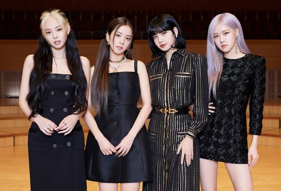

- TWICE
- Red Velvet
- BlackPink
YG 3세대 걸그룹
BlackPink

지수(1995.01.03)

제니(1996.01.16)

로제(1997.02.11)

리사(1997.03.27)

출시 앨범 목록
- 휘파람
- 붐바야
- 불장난
- STAY
- 마지막처럼
- 뚜두뚜두
- Kill This Love
- 피카부 (peek-A-Boo)
- How You Like That
- Ice Cream
- Lovesick Girls
주요기록
- BLACKPINK 공식 인스타그램 팔로워 수는 국내 기준 2위이며, 개인 인스타그램 팔로워 수 1위~4위는 모두 네 멤버가 차지하고 있다.
- V LIVE 공식 채널 중에서 구독자 순위는 2위이며, 걸그룹에선 1위이다.
- 스포티파이 팔로워 수는 대한민국 아티스트 중 2위이며, 전 세계 걸그룹 중 1위이다. 스포티파이에 등록 된 전 세계 여성 아티스트 중 9위이며, 걸그룹으로선 유일하다.
- BLACKPINK의 뮤직비디오 추이는 K-POP 가수 중 최정상급의 기록을 세우고 있으며, 매 자체 기록을 경신하고 있다.
안무영상 추이는 K-POP 가수 중 압도적으로 높은 조회수를 기록하고 있다.
또한, 세계 15위권 안에 들 정도의 구독자 수를 보유하고 있다.
- BLACKPINK의 유튜브 채널 구독자 수는 (현재 기준) 대한민국 통합 채널 1위, 전 세계 아티스트 채널 1위이다. (통합 전 세계 15위권 내)
- 총 10개의 유튜브 뮤직비디오가 있다. 10개의 뮤직비디오 모두 3억 뷰를 넘은 상태이고, 5억 뷰 이상 9개, 6억 뷰 이상 8개, 10억 뷰 이상 5개, 18억 뷰 이상 1개가 있다.
한국 아이돌과 한국 여성 가수 중 최초로 단일 뮤직비디오에서 10억 뷰 조회수를 돌파한 가수이며 한국 가수 전부 중에는 당시 회사 선배인 싸이에 이은 2번째다.